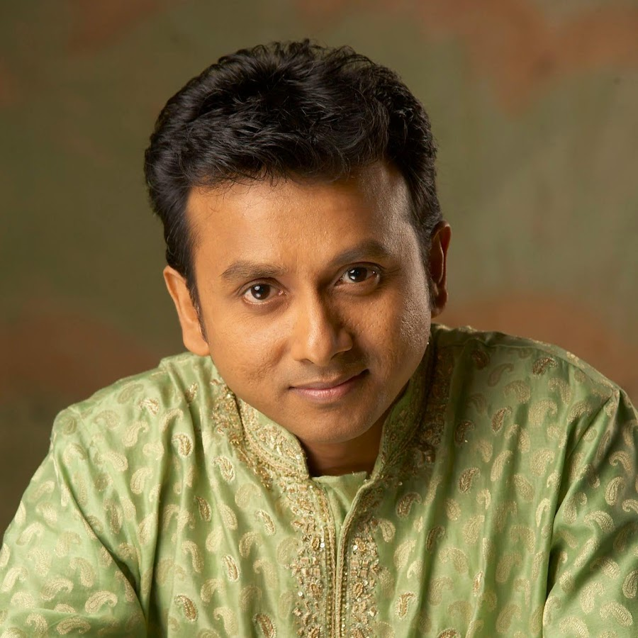
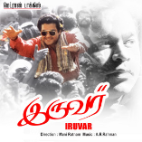

UNNIKRISHNAN SONGS
|  | P. Unnikrishnan is a renowned Indian classical and playback singer, acclaimed for his contributions to Carnatic music and film songs. Born in 1966 in Kerala, he trained under renowned Carnatic musicians and gained fame for his melodious voice and impeccable technique. Unnikrishnan made his playback debut in 1994 with the Tamil film "Kadhalan," winning the National Film Award for Best Male Playback Singer for the song "Ennavale." He has since sung in multiple Indian languages, blending classical and contemporary styles. Known for his devotion to traditional music, Unnikrishnan continues to be a respected figure in both classical and film music circles. |
|  | Narumugaiyeh Narumugaiyeh |
| Narumugaiyeh Narumugaiyeh | |
| Narumugaiyeh Narumugaiyeh | |
| Narumugaiyeh Narumugaiyeh | |
| Narumugaiyeh Narumugaiyeh | |